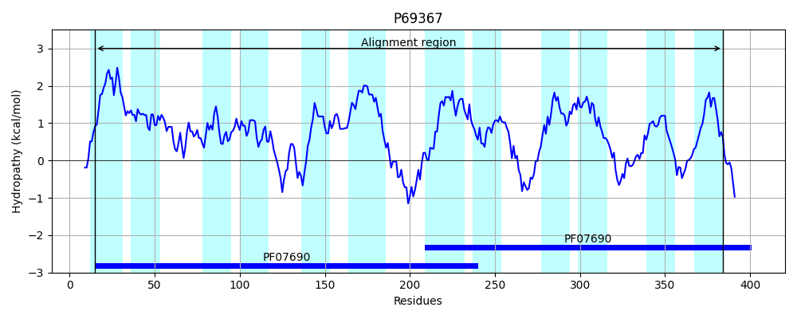
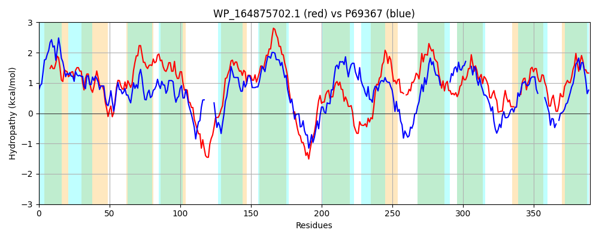

Hit Accession: P69367
Hit TCID: 2.A.1.2.21
Hit Description: gnl|BL_ORD_ID|11260 gnl|TC-DB|P69367|2.A.1.2.21 Multidrug resistance protein mdtH - Escherichia coli.
Mach Len: 390
e:0.000000
Query TMS Count : 12
Hit TMS Count: 12
TMS-Overlap Score: 7.350000
Predicted Substrates:CHEBI:4796;enoxacin, CHEBI:7629;norfloxacin
BLAST Alignment:
Score: 373 , Bit scores: 148 bits, E-value: 1.0e-40, Alignment length: 390, Percentage identity: 28
Query: 2 LLGSQFVFNIGFYAVVPFLALFLRDDMLLSGGLIGLILGLRTFSQQGMFIIGGTLADRYGAKAIILAGCVVRVAGYLLLACATSLWPIILGACLTGVGGALFSPSIEALLARTGTHSQANGKRSRAEWFALFAVCGELGAVIGPVAGGLLSGIGFRHIALAGAGIFLLALLVLFFCLPA-DGHTTTTRRRVPWWMPLRQPRFVAFILAYSSWLLSYNQLYLALPVEIQRSGGREQDLAPLFMLASLLIITLQLPLARFA-RRIGAVRILPVGFLLLSASFVSVALFAATPPAEGWLRLVPSACFVTLLTLGQMLLVPSAKDLIPLFAEESTLGAHYG----ALATAGGFAVLAGNLLLGHLLDQALTPSSQAVYPWLLLALFPLCSAVAL 385
LL + +GF+ V P +++ D M + ++G+ LGLR F QQG+ I GG +ADR+GAK +I+ G ++R AG+ + A W + L+G+GG LF P AL+ + Q R +F+L + GAVIG + G L FR + GA +F+L + LPA T T R +R RFV ++L + + + Q+ L LP+ + G + ++ + + L +TL P+AR++ + L G L++S S + V + G +L C L +G ++ P+ + L A+ G++ G LA G + G G L D + + Q PW++L + + + +AL
Sbjct: 15 LLIDNMLVVLGFFVVFPLISIRFVDQMGWAAVMVGIALGLRQFIQQGLGIFGGAIADRFGAKPMIVTGMLMRAAGFATMGIAHEPWLLWFSCLLSGLGGTLFDPPRSALVVKLIRPQQ------RGRFFSLLMMQDSAGAVIGALLGSWLLQYDFRLVCATGAVLFVLCAAFNAWLLPAWKLSTVRTPVREGMTRVMRDKRFVTYVLTLAGYYMLAVQVMLMLPIMVNDVAGAPSAVKWMYAIEACLSLTLLYPIARWSEKHFRLEHRLMAGLLIMSLSMMPVGM------VSGLQQLFTLIC---LFYIGSIIAEPARETLSASLADARARGSYMGFSRLGLAIGGAIGYIGG----GWLFDLGKS-AHQPELPWMMLGIIGIFTFLAL 384 | Protein Hydropathy Plots: |
|---|
 |  |
Pairwise Alignment-Hydropathy Plot:
|
|---|
|  |